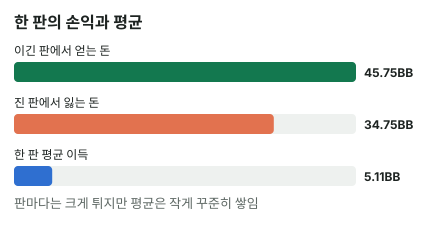

안녕하세요. B29에서 뱅크롤을 배우며 "가진 돈을 한 게임에 다 쓰면 안 된다"고 했죠. 오늘은 그 말 뒤에 숨은 이유를 끝까지 따라가 볼게요.
이득인 결정만 해도 한동안 계속 질 수 있어요. 이걸 모르면 지는 기간에 좋은 결정을 버리고 나쁜 결정으로 바꾸게 돼요. 한 판의 콜에서 시작해 "한 달"까지 넓혀 가며, 그게 왜 가능한지 숫자로 따져 봐요.
이 글에서 배울 것
- 분산과 다운스윙이 무엇이고, 왜 포커에서 특히 크게 나타나는지
- 한 번의 결정이 버는 평균 이득과 한 판에서 오가는 칩을 나란히 놓으면 보이는 것
- 판이 쌓이면 무엇이 모이고 무엇이 오히려 커지는지, 그리고 지는 기간에 할 일
1단계. 분산과 다운스윙
한 줄 정의
- 분산 = 결과가 평균(EV)에서 얼마나 흔들리는지예요. 평균은 B24에서 배운 EV, 같은 결정을 여러 번 했을 때 한 번에 평균 얼마를 버는지예요
- 다운스윙 = 평균보다 나쁜 결과가 한동안 이어지는 구간이에요. 반대로 좋은 결과가 이어지면 업스윙이에요
평균이 플러스인 사람도 결과는 평균 위아래로 출렁여요. 그 출렁임이 아래쪽으로 길게 이어진 구간이 다운스윙이에요.
비유: 동전 던지기
앞면·뒷면이 반반으로 나오는 동전도 열 번 던지면 뒷면이 일곱 번 나올 수 있어요. 동전이 고장 난 게 아니라 던진 횟수가 적어서 그래요.
몇 천 번을 던지면 앞·뒷면의 비율은 반반에 가까워져요. 평균은 많이 반복해야 보이고, 적게 반복하면 출렁임이 평균을 가려요.
2단계. 한 판의 크기 재기
출발점: 이득인데 거의 절반은 지는 콜
I22에서 Hero는 Q♠Q♦로 플랍 J♥ 8♥ 3♣에서 체크레이즈 올인을 받고 콜했어요. 가정 레인지에 대해 이 콜은 평균 +5.11BB인 좋은 결정이지만, 에퀴티가 약 49.5%라 거의 절반은 지는 콜이었죠. 결과와 결정을 떼어 보는 법(자세한 건 A27)은 따로 두고, 오늘은 이 콜의 크기만 봐요.
평균과 한 판을 나란히
콜하는 순간부터 보면 결과는 둘 중 하나예요.
| 이 콜 한 번 | 손익 |
|---|---|
| 이기면 | +45.75BB |
| 지면 | −34.75BB |
| 평균(EV) | +5.11BB |
평균 이득 5.11BB는 한 판에서 오가는 칩에 비하면 작은 조각이에요. 45.75 ÷ 5.11은 약 9, 34.75 ÷ 5.11은 약 7이에요. 실력의 몫이 한 판 출렁임의 대략 7~9분의 1밖에 안 되는 거예요.
한 번 지면 메우는 데 걸리는 판
다른 말로 하면, 이 콜을 한 번 져서 빠진 34.75BB를 평균 이득만으로 메우려면 같은 콜을 일곱 번 가까이 더 해야 해요. 그사이에 또 지면 메울 판이 더 늘어나죠.

비유: 출렁이는 배 위의 저울
이건 출렁이는 배 위에서 작은 무게 차이를 재는 것과 비슷해요. 재려는 차이가 5.11이라면, 배는 한 번에 45.75나 34.75씩 바늘을 흔들어요. 한 번 재서는 차이가 보이지 않아요.
3단계. 왜 포커에서 특히 클까
한 판에 스택 대부분이 오가요
동전 내기는 한 번에 거는 돈이 늘 같아요. 포커는 다르죠. I22처럼 한 판에 스택 대부분이 오가는 올인이 있고, 그 판 하나가 작은 팟 수십 개의 손익을 덮을 수 있어요.
큰 팟 몇 개가 한 달을 정해요
한 달 동안 판은 많이 쳐도, 결과를 크게 움직이는 큰 팟은 몇 개뿐일 수 있어요. 큰 팟이 한 달에 몇 번뿐이라면, 그건 동전을 몇 번 던진 것과 다르지 않아요.
그 몇 번이 지는 쪽으로 몰리면, 다른 판을 아무리 잘 쳐도 그 달은 마이너스로 끝날 수 있어요. "한 달"은 시간으로는 길어도 큰 결정의 수로는 짧을 수 있어요.
좋은 결정도 자주 지는 게임이에요
I22의 콜은 거의 절반을, B07의 콜은 10번 중 7번을 지는 좋은 결정이었어요. 포커에는 이렇게 이득이지만 지는 판도 많은 결정이 섞여 있어서, 결과가 실력과 따로 노는 기간이 생길 수 있어요.
4단계. 판이 쌓이면 무엇이 모이고 무엇이 커질까
모이는 것: 한 판당 평균
판이 쌓이면 이긴 판의 출렁임과 진 판의 출렁임이 서로 섞여 지워져요. 그래서 한 판당 평균은 점점 5.11BB 쪽으로 모여요.
커질 수 있는 것: 누적 손익의 출렁임 폭
그런데 쌓인 손익 자체의 출렁임 폭은 판이 늘수록 오히려 커질 수 있어요. 동전으로 보면 쉬워요.
- 10번에 뒷면 7·앞면 3이면 차이는 4개, 비율은 10번 중 7번이에요
- 1,000번에 뒷면 520·앞면 480이면 차이는 40개로 더 커졌지만, 비율은 반반에 훨씬 가까워요
출렁임 폭은 판 수보다 천천히 커져요. 그래서 판 수로 나눈 한 판당 값은 줄어들지만, 쌓인 금액으로는 큰 다운스윙도 큰 업스윙도 계속 나올 수 있어요.
이게 다운스윙에 주는 뜻
다운스윙이 지나면 잃은 돈이 되돌아온다는 뜻은 아니에요. 동전은 지난번에 뒷면이 많이 나왔다고 앞면을 더 내주지 않아요. 앞으로의 판은 지난 손실과 상관없이 평균대로 기대될 뿐이에요.
달라지는 건 비중이에요. 판이 쌓일수록 그 다운스윙이 한 판당 평균에서 차지하는 몫이 작아져요. 업스윙도 똑같은 원리라, 한 달 내내 이긴 것도 그만큼 덜 믿어야 해요.
왜 그럴까: 짧은 기간에는 출렁임이 평균을 덮어요
판이 적으면 덮이고, 쌓이면 드러나요
어느 기간의 결과든 결정들의 평균과 그 기간의 카드가 준 출렁임이 더해져 있어요. 2단계에서 봤듯 한 판의 평균은 출렁임의 7~9분의 1이에요.
판이 몇 개 안 되면 출렁임이 평균을 그대로 덮어요. 판이 쌓여야 4단계처럼 한 판당 평균이 드러나요. 그래서 "잘 치는데 한 달 내내 진다"는 큰 판이 적은 한 달이라면 얼마든지 가능한 일이에요.
다운스윙에서 가장 큰 손해
다운스윙은 실력이 없다는 증거도, 있다는 증거도 아니에요. 그런데 그 사이에 결정을 바꾸면 이야기가 달라져요.
I22 같은 콜을 접기 시작하면, 매번 5.11BB씩 받을 평균을 스스로 버려요. 출렁임이 아니라 평균 자체가 내려가는 거죠. 다운스윙의 진짜 손해는 지는 판이 아니라, 지는 판에 반응해서 결정을 바꾸는 것이에요.
자주 하는 실수
실수 1. "이 콜만 하면 진다"며 좋은 결정 버리기 "QQ로 올인 받으면 맨날 진다"며 I22 같은 콜을 접는 경우예요. 거의 절반은 지는 콜이니, 몇 번 연달아 지는 건 그 결정의 성질 그대로일 수 있어요. 대신 진 판의 결정 근거가 그대로라면 결정도 그대로 둬요.
실수 2. 빨리 되찾으려고 판을 키우기 잃은 만큼 빨리 되찾으려고 무리한 콜·블러프를 하거나(B18에서 배운 틸트), 평소보다 큰 판에 앉는 경우예요. 같은 실력이면 판을 키워도 평균과 출렁임이 같은 비율로 커질 뿐이고, 상대가 강해지면 평균 쪽이 오히려 줄 수 있어요. 커지는 건 뱅크롤에 비한 출렁임이라, 한 번의 다운스윙에 봉투가 빌 수 있죠. 대신 미리 정한 뱅크롤 규칙대로 판을 골라요.
실수 3. 모든 손실을 "분산이야"로 넘기기 반대 방향의 실수예요. 지는 기간마다 "다 분산이야" 하고 결정을 한 번도 돌아보지 않으면, 진짜 고칠 결정도 출렁임에 묻혀요. 분산이라는 말은 결정을 확인한 뒤에 쓰는 말이에요.
"그럼 계속 지는데 실력 문제인지 어떻게 알아요?"
결과만으로는 짧은 기간에 가르기 어려워요. 그래서 결정을 하나씩 확인하는 것이 가장 확실한 길이에요. 큰 판 몇 개를 골라 그때의 필요 에퀴티·상대 레인지·EV를 다시 물어요(결정을 평가하는 세 질문, 자세한 건 A27).
근거 있는 결정이 쌓여 있다면 지금의 결과는 출렁임 쪽일 수 있어요. 근거 없이 한 결정이 자꾸 나온다면, 결과와 상관없이 고칠 부분이 있는 거예요.
선생님의 한마디
다운스윙 중에는 결과표 대신 이 습관을 매 세션 지키세요.
- 세션이 끝나면 큰 팟 세 개만 골라 핸드 기록에 남기기 (작은 팟은 건너뛰기)
- 각 판에 "근거 있음 / 근거 없음" 한 줄만 적기. 손익 칸은 비워 두기
- "근거 없음"이 같은 자리에서 반복되면 그것만 고치고, 나머지는 손대지 않기
- 판 크기는 그날 기분이 아니라 뱅크롤 규칙에 맡기기
여기서 뱅크롤 규칙은 B29에서 본 것처럼 바이인을 뱅크롤의 일부로만 쓰고, 봉투가 줄면 한 단계 낮은 게임으로 내려가는 선을 미리 정해 둔 거예요. 하루에 얼마를 잃으면 자리에서 일어날지(손절 라인)도 같이 정해 두면 좋아요.
연습 문제
학습툴 연습 화면은 준비 중이에요. 아래 문제로 먼저 확인해 보세요.
문제 1. 친구가 "요즘 셋을 맞춰도 계속 져서, 이제 작은 페어로는 셋 마이닝을 안 할 거야"라고 해요. I21에서 본 셋 마이닝의 조건을 떠올리면, 친구가 결정을 바꾸기 전에 무엇을 먼저 확인해야 할까요?
정답 보기
결과가 아니라 그 콜의 근거부터요. 콜할 때 상대 스택이 셋을 맞췄을 때 벌어야 하는 돈보다 충분히 깊었는지(I21)를 확인해요. 근거가 맞았다면 결정은 유지해요.
셋을 맞추고도 지는 판은 짧은 기간에 몰려서 나올 수 있어요. 그건 출렁임이에요. 다만 상대 스택이 얕은데도 콜했던 판이 섞여 있었다면, 그 판들은 결과와 상관없이 고칠 결정이에요.
문제 2. 두 친구가 한 달 결과를 비교해요. 친구 A는 작은 팟만 아주 많이 쳤고, 친구 B는 판 수는 적은데 I22 같은 큰 올인이 몇 번 있었어요. 둘 다 한 달 결과가 비슷하게 플러스예요. 이 한 달 결과로 "실력이 확실하다"고 말하기 더 어려운 쪽은 누구고, 왜일까요?
정답 보기
친구 B예요. B의 한 달은 큰 올인 몇 번으로 정해졌을 수 있어요. 그 올인 한 번은 평균 이득보다 일곱~아홉 배 큰 칩을 움직이니, 몇 번만 이기는 쪽으로 몰려도 한 달이 플러스가 돼요. 큰 결정의 수로 보면 B는 동전을 몇 번 던진 셈이에요.
A는 한 판의 출렁임이 작고 판이 많아서, 한 판당 평균이 더 모여 있을 가능성이 커요. 그래도 A의 결과 역시 출렁임을 품고 있으니, 둘 다 결정의 근거를 확인한 뒤에 실력을 말해요.
핵심 정리
- 분산은 결과가 평균(EV)에서 흔들리는 정도, 다운스윙·업스윙은 그 흔들림이 한쪽으로 이어진 구간이에요
- 한 번의 평균 이득은 한 판에서 오가는 칩보다 훨씬 작아서, 판이 적을수록 결과가 실력을 가려요
- 포커는 한 판에 스택이 오가고 큰 팟이 드물어서 한 달도 짧은 표본이 될 수 있어요
- 판이 쌓이면 한 판당 평균은 모이지만, 쌓인 금액의 출렁임은 계속 클 수 있어요. 지난 손실이 되돌아오지는 않아요
- 결과만으로는 실력과 출렁임을 가를 수 없어요. 가르는 건 결정 하나하나의 근거예요
정리하며
오늘은 I22의 올인 콜 한 번의 크기를 재는 데서 시작했어요. 평균 이득 5.11BB는 한 판에 오가는 칩의 7~9분의 1이라, 큰 팟 몇 개가 정하는 한 달은 출렁임이 실력을 덮을 만큼 짧을 수 있었죠. 판이 쌓이면 한 판당 평균은 모이지만 잃은 돈이 돌아오는 건 아니니, 지는 기간에 지킬 건 결과가 아니라 결정이에요.
다음 글 A31에서는 다시 한 판으로 돌아가요. 오픈했다가 3벳을 맞은 KJs로 콜·폴드·4벳 중 무엇이 나은지, 콜의 필요 에퀴티와 4벳의 본전 폴드율을 나눠 비교해 봐요.
AI 작성 · 원칙 설명 · 숫자는 I22의 가정 레인지 계산을 불러 와 계산기로 다시 확인 (스팟/A29.json)